SECTION A: (25 marks)
Answer all the questions in this section in the spaces provided
1. State any two uses of microwaves. (2 marks)
2. In a laboratory there are four metals — tin, nickel, copper and cobalt. Of these metals, name the metals that are;
(a) magnetic, (1 mark)
(b) non-magnetic. (1 mark)
3. State one use of echoes.
5. State two advantages of using convex mirrors to monitor movements in a large supermarket. (2 marks)
6. Figure 1 shows an insulated wire wound on a U-shaped iron core connected to a battery.
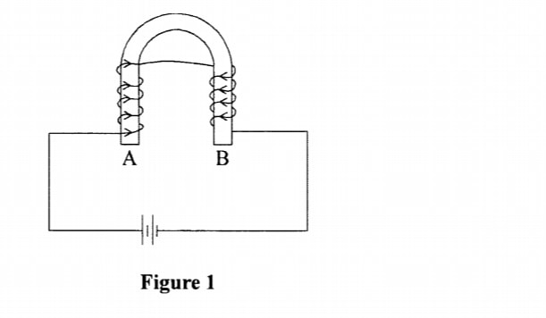
Determine the polarity of A. (1 mark)
7. Explain how the greenhouse gets warm. (2 marks)
8. Draw a circuit diagram to show a p-n junction diode in the forward biased mode. (1 mark)
9. Figure 2 shows a virtual image I formed by a convex lens.
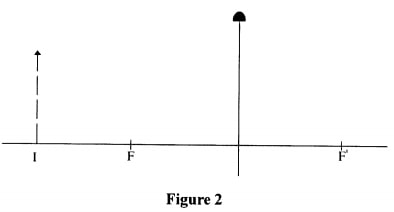
Draw a ray diagram to locate the object. (3 marks)
A 10. Write an equation to show how an element zX decay to element Y by emitting a beta particle. (1 mark)
11. Explain what is observed when an uncharged sphere is brought close to a positively charged electroscope. (3 marks)
12. Figure 3 shows a transverse wave.
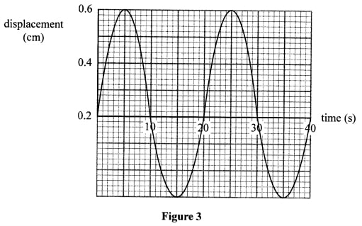
Determine the frequency of the wave. (2 marks)
13. Figure 4 shows three resistors connected in series.
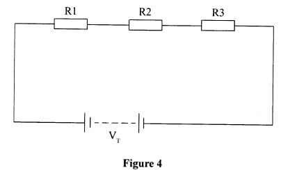
Using Ohm's law, show that the effective resistance is given by the expression: RT= RI + R2 + R3 (3 marks)
14. State how heating is achieved in a resistance wire. (1 mark)
SECTION B: (55 marks)
Answer all the questions in this section in the spaces provided.
15. (a) Figure below shows the interface between glass and air.
Draw on the figure a ray diagram to illustrate the critical angle. (3 marks)
(b) Figure 6 shows a ray of light incident at right angles to face AB of a right angled glass prism of refractive index 1.62.
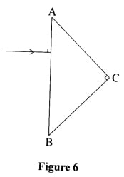
Figure 6 (i) Determine the critical angle of the material. (3 marks)
(ii) Complete the ray diagram to show the path of light until it leaves the prism. (2 marks)
(c) State any two applications of prisms. (2 marks)
16. (a) Figure 7 shows a set up that may be used to observe photoelectric effect. A radiation is incident on the cathode. It is observed that the microammeter registers a current.
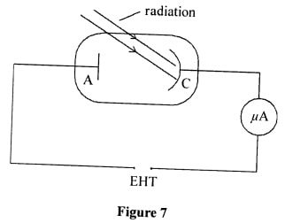
(i) Explain how the current is produced. (2 marks)
(ii) State with a reason what must be done for a higher current to be registered. (2 marks)
(iii) It was observed that for a certain incident radiation, no current was registered. Explain this observation. (2 marks)
(b) A monochromatic light of wavelength 4.50 x 10' m is incident on a metal surface of threshold frequency 5.5 x 10" Hz. (Speed of light c is 3.0 X 1O' ms-' and planks constant h is 6.63 x 10-34Js).
Determine
(i) the work function of the metal surface, (3 marks) (b) A monochromatic light of wavelength 4.50 x 10' m is incident on a metal surface of threshold frequency 5.5 x 10" Hz. (Speed of light c is 3.0 X 1O' ms-' and planks constant h is 6.63 x 10-34Js). Determine (i) the work function of the metal surface, (3 marks)
(ii) average kinetic energy of the emittal photoelectrons. (4 marks)
17. (a) Figure 8 shows a conductor AB connected to a galvanometer and placed between two permanent magnets.
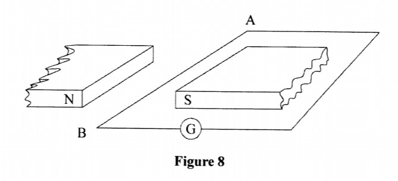
Conductor AB is moved perpendicular to the magnetic field. State and explain the observation made on the galvanometer. (3 marks)
(ii) State the effect of moving the conductor faster. (1 mark)
(b) A transformer is used to step down 240V to 12V for use in an electric appliance operating at 0.5A. If the primary coil has 600 turns, determine the;
(i) number of turns in the secondary coil, (3 marks)
(ii) Current in the primary coil (3 marks)
18. (a) State two factors that affect the capacitance of a parallel plate capacitor. (2 marks)
(b) Figure 9 shows an electric circuit in which three capacitors are connected across a power supply. (2 marks)
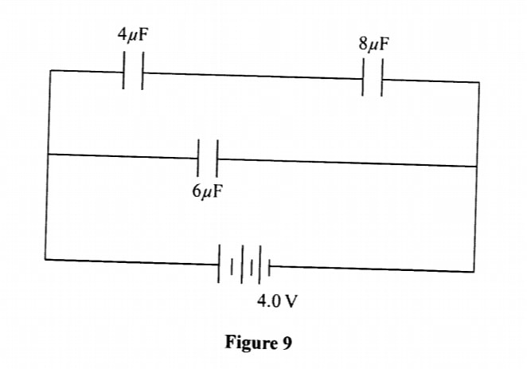
(i) total capacitance, (4 marks)
(ii) Quantity of change stored on the 8uf capacitor(3 marks)
19. (a) Figure 10 shows a block diagram of a cathode ray oscilloscope (CRO).
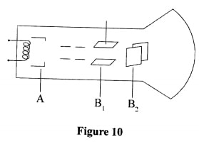
(i) State the names of the parts labelled B1 and B,. (2 marks)
(ii) State and explain the function of the part marked A. (3 marks)
(b) Figure 11 shows a trace of a signal observed on the screen of a CRO. The time-base setting is 20 mscm-'.
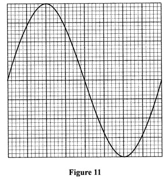
Determine the frequency of the signal. (4 marks)
(c) Explain why tunsten is used as a target in an x-ray tube. (2 marks)
- Cooking/warming/heating
- Communication / Radar/ measure distances
(a) magnetic, (1 mark) - Nickel, cobalt
(b) non-magnetic. (1 mark) - Tin, copper
- Measuring distances/ speed of sound
Define polarization (1 mark)
- Polarization is the formation of hydrogen gas at the positive terminal of the cell.
- Have a wide/wider field of view.
- Form upright images.
- A South pole
- The light passes through the walls and gets absorbed by the soil, emitting energy of longer wavelengths which cannot penetrate the walls hence get trapped within the green house causing heating.
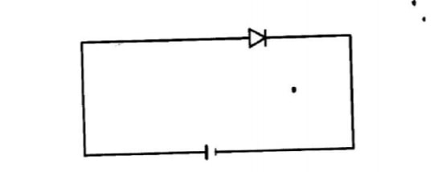
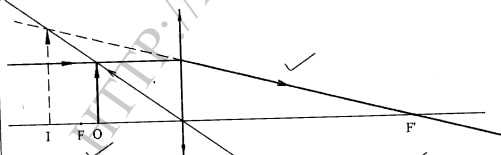
10. Write an equation to show how an element zX decay to element Y by emitting a beta particle. (1 mark)
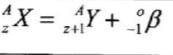
- The leaf falls
-Charge is induced on the sphere causing repulsion of electrons to the leaf hence leaf falls.
T= 20 s
f=1/2
=1/20
= 0.05 Hz
13.
VT = V1 + V2 + V3
from ohm's law V = IR .therefore,
ITRT = I1R1 + I2R2 + I3R3
but I1 = I2 = I3 = IT since they are in series
IRT⁄I = I⁄I(R1 + R2 + R3)
RT = R1 + R2 + R3
Conversion of the Kinetic energy of the electrons into heat energy/ converstion of electrical energy to heat energy
15. (a)
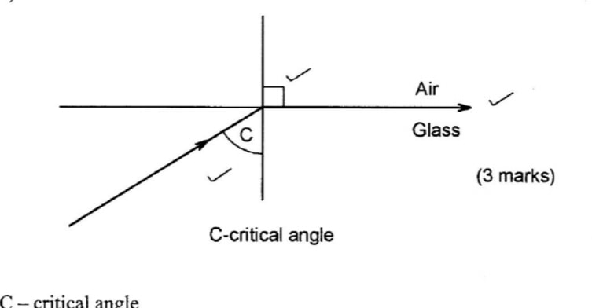
n = 1 sin C
sin C = 1 ÷ n = 1 ÷ 1.62
C = 38.1°
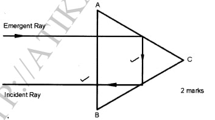
- Dispersion of white light
- In periscopes
- In Binoculars
- In telescopes
- . Radiations cause photo electrons to be ejected from the metal surface (cathode), the electrons are attracted by the anode hence current flows.
- . use a radiation of higher intensity Source is made moved closer/ increase anode voltage/accelerating voltage.
The frequency of the incident radiation is below the threshold frequency of the surface hence no emission can take place
(i) the work function of the metal surface, (3 marks)
Wo = hfo
= 6.63 x 10-34 x 5.5 x 1014
3.647 x 10-19
hf = hfo + K.E
K.E = hc - W λ
= 6.63 X 10-34 x 3.0 x 108 - 3.647 x 10-19 4.5 x 10-7
= 4.42 x 10-19 - 3.647 x 10-19
7.73 x 10-20 J
- A momentary deflection is observed, Conductor cuts the field. An emf is induced in AB Causing current in the circuit
- A bigger deflection is observed/ higher current
Vp = Np Vs Ns
Ns = 600 x 12 240
= 30 turns
Np = Is Ns Ip
Ns = 30 x 0.5 600
= 0.025 A
- Area of overlap of the plates
- Distance between the plates.
- Type of dielectric.
1⁄CT = 1⁄C1 + 1⁄C2
= 1⁄4 + 1⁄8 = 2 + 1⁄8 = 3⁄8
CT1 = 8⁄3 = 2.67μF
C = 6 + 2.67 = 8.67μF
Q in series section
Q = CV
= 2.67 x 4.0
= 10.68C
Q(4μF) = 10.68
(i) State the names of the parts labelled B1 and B2 (2 marks)
B1 - y detecting plates
B2 -X deflecting plates
Grid; controls the intensity by controlling the number of electrons reaching the screen.
If made more negative less electrons pass through.
T= 8 X 20 ms-1= 160 = 0.16 s F = 1/2 = 1/0.16 = 6.25Hz (c) Explain why tunsten is used as a target in an x-ray tube. (2 marks) - Tungsten has a high melting point. - It can with stand high temperatures.
= 160
= 0.16 s F = 1/2
= 1/0.16 = 6.25Hz
- Tungsten has a high melting point.
- It can with stand high temperatures.